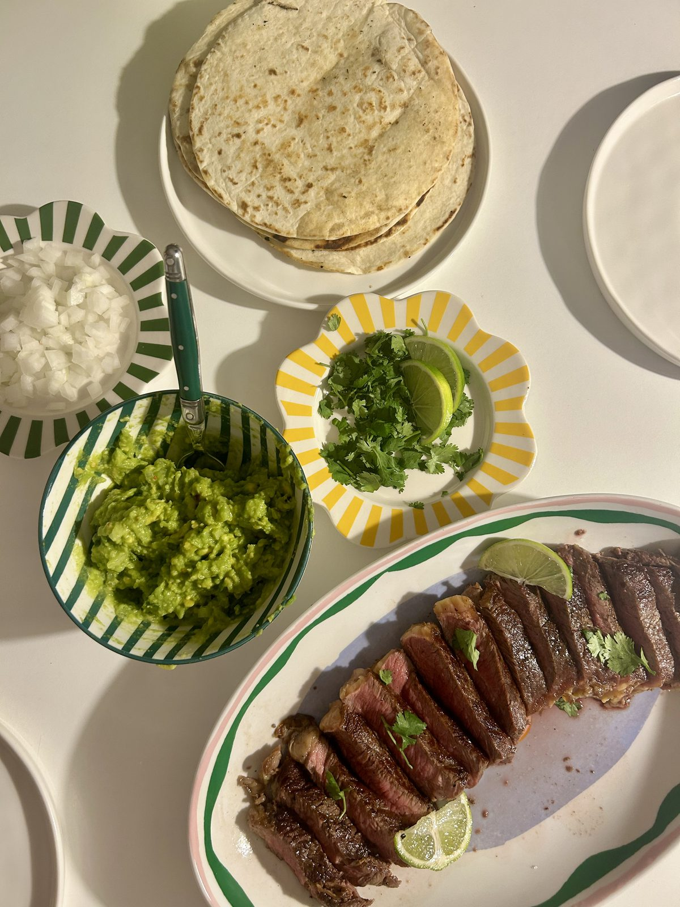

Seared steak, sliced thin and piled into warm tortillas with proper chunky homemade guac, diced onion, coriander and a squeeze of lime.
Set it up build-your-own style down the middle of the table — steak on one plate, guac and toppings in their own little bowls — and let everyone build their own. Good for a weekend dinner with people over.
Keep the steak simple: a good sear, a proper rest, and thin slices against the grain do most of the work.

4 servings
30–40 mins • High Protein • Base: 4 servings
Steak brings a solid hit of protein and iron, while the homemade guac adds healthy fats, fibre, and potassium — a satisfying, well-rounded plate that still feels like a casual night in.